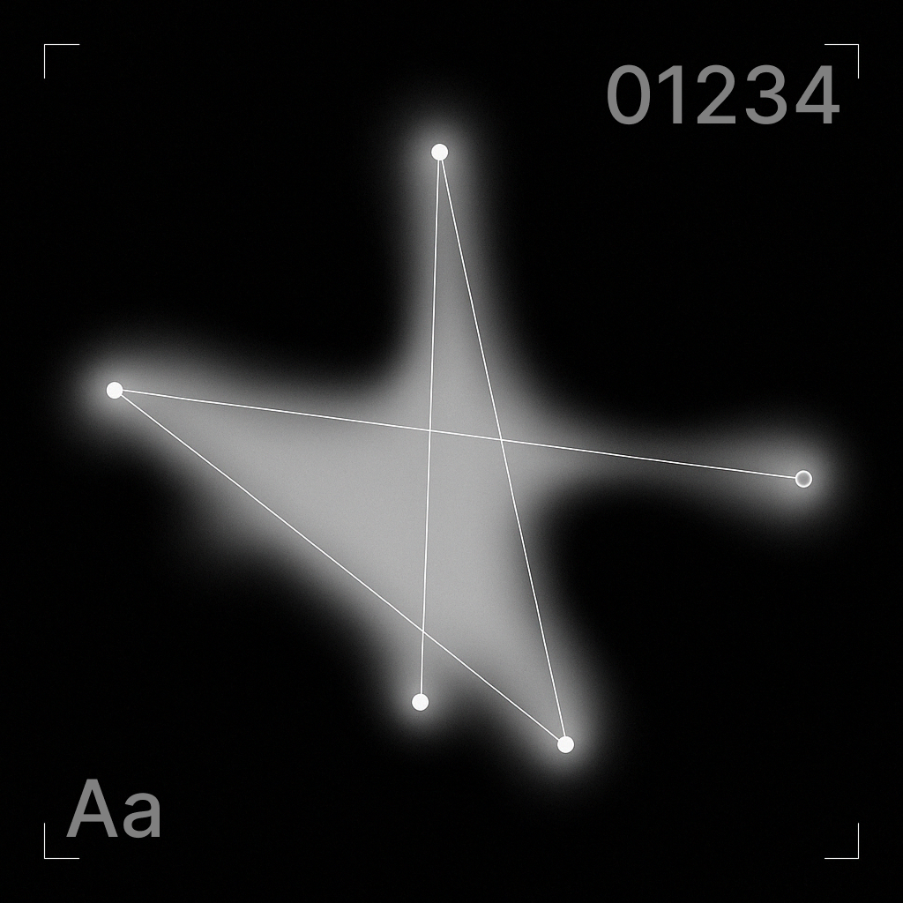
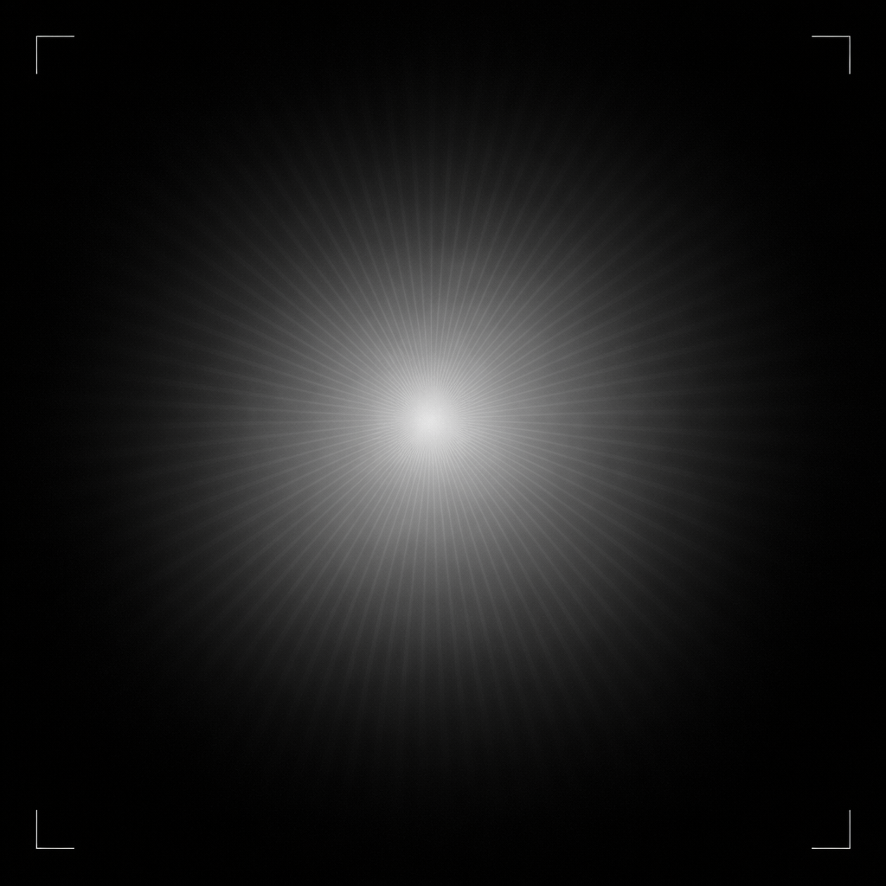
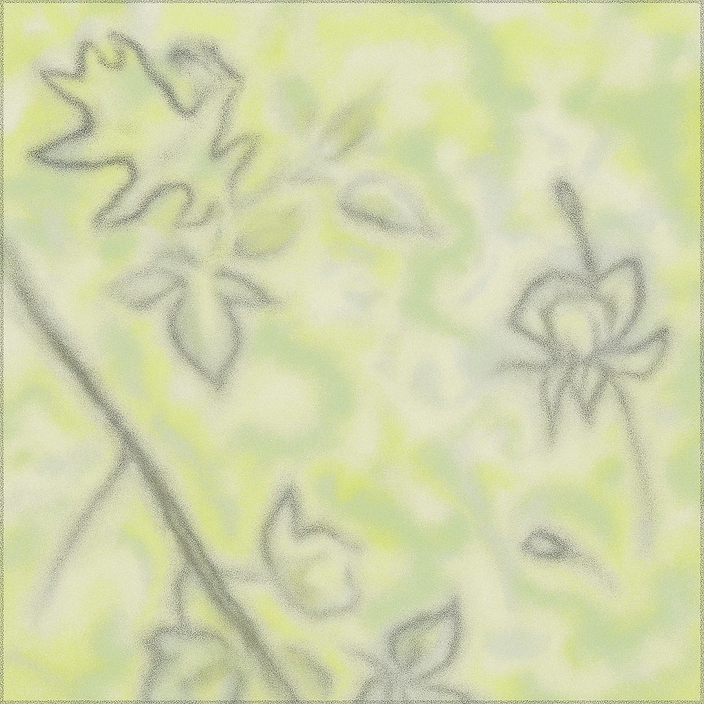

FIZZLED OUT
— Designing for Stillness
PUBLISHED: 03.2025
ROLE: Writer
Stockholm, SWE

Buzz. Ping. Scroll.
Constant stimulation has become the baseline of digital life. Not necessarily because people want it, but because many systems are built to reward speed, reaction, and constant availability. They refresh, notify, prompt. Stillness, in contrast, is often treated as something to avoid.
I'd like to take another stance: stillness as an intentional design choice. Not as absence. But as structure. Designing for stillness means creating systems that stay even when attention drops - and that doesn't require users to be on constant speed. Below I'm translating stillness into visual principles, interaction design, and information architechture.
VISUAL PRINCIPLES
Visuals set the tone before anything is interacted with. Space, color, type, and motion shape whether a system feels demanding or supportive.
→ Whitespace
Space creates orientation. Enough room to understand what matters, without filling every gap.
→ Color and contrast
High intensity has its place, but constant contrast is tiring. Softer palettes reduce strain and support longer use.
→ Type
Typography sets pace. Dense tight fonts speed reading; open, broader ones, slow it down.
→ Motion
Motion should clarify, not compete. Organic transitions feel calmer than those that steer away attention from the content itself.

INTERACTION DESIGN
Interaction is where most cognitive load accumulates - and where design choices become felt.
→ Predictable patterns
Consistency lowers effort. When behavior is familiar, attention can rest.
→ Soft feedback
Feedback doesn’t need to interrupt, subtle confirmation is often enough.
→ Restricted flows
Endless interaction removes orientation. Clear beginnings and endings create a sense of control.
→ Adaptive pacing
Systems can respond to drops in attention instead of pushing harder. Slowing down is sometimes the more respectful move.

INFORMATION ARCHITECHTURE
Interaction is where most cognitive load accumulates - and where design choices become felt.
Stillness isn’t only visual - it lives in the structure itself. A product can look calm and still feel overwhelming if its hierarchy is unclear.
→ Presence by subtraction
Consistency lowers effort. When behavior is familiar, attention can rest.
→ Pause-friendly systems
Feedback doesn’t need to interrupt. Subtle confirmation is often enough.
→ Organic logic
Systems can respond to drops in attention instead of pushing harder. Slowing down is sometimes the more respectful move.

Designing for stillness isn’t about doing less - it’s about being more considerate of what we ask from people.
→ People only have so much focus. If everything demands it, nothing really gets it.
→ When things are clear and calm, people make fewer mistakes.
→ Quiet design makes space for more people - including those who are tired, stressed, distracted, or navigating complex lives.
→ Calm communicates confidence. When structure is solid, the interface doesn’t need to perform for attention.
Many digital products assume constant availability. Stillness lets the user move on their own terms. In a world that keeps accelerating, this feels like the least we can do as designers of systems - because no one's at their best when they’re all fizzled out.